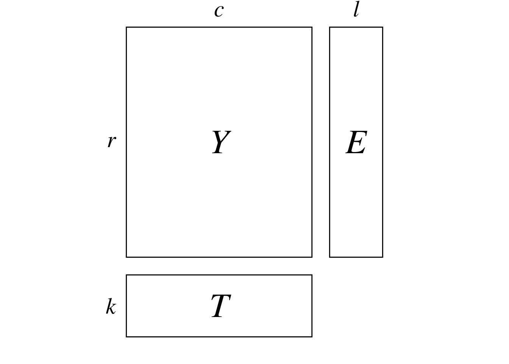
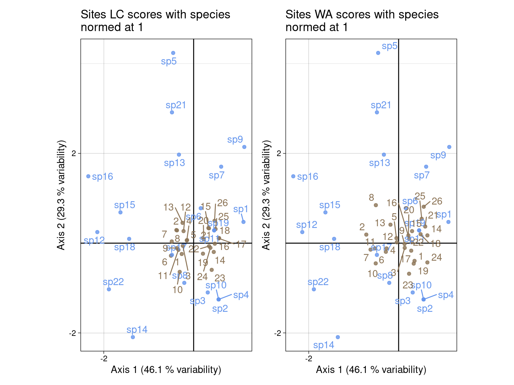
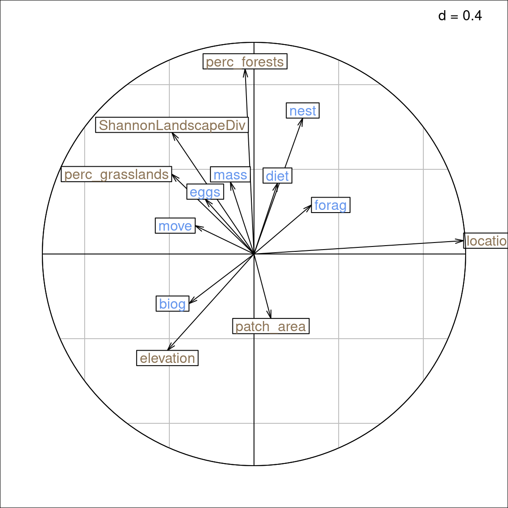
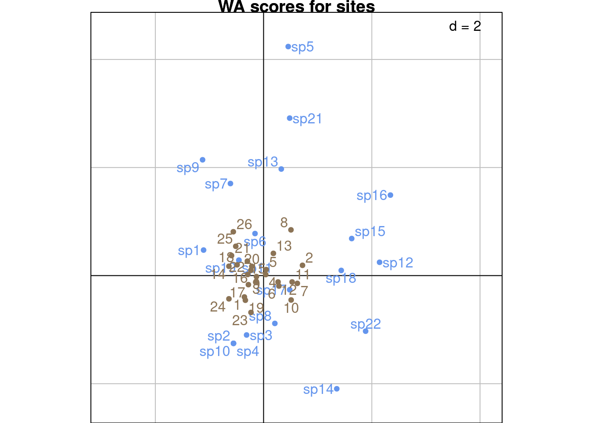
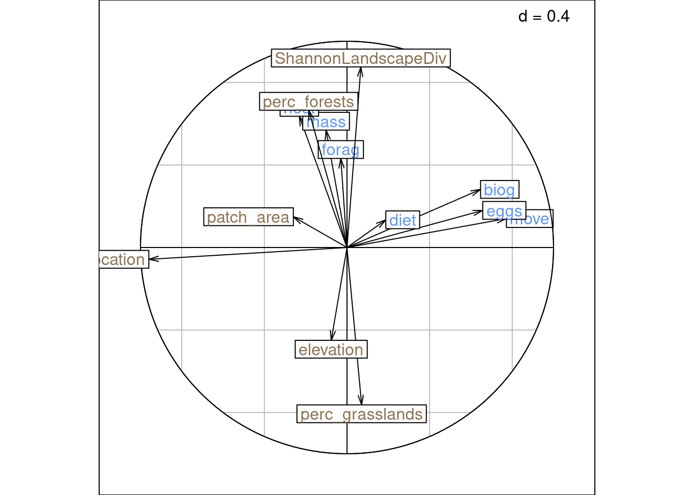
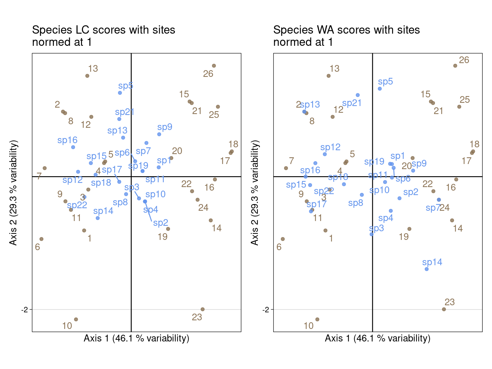
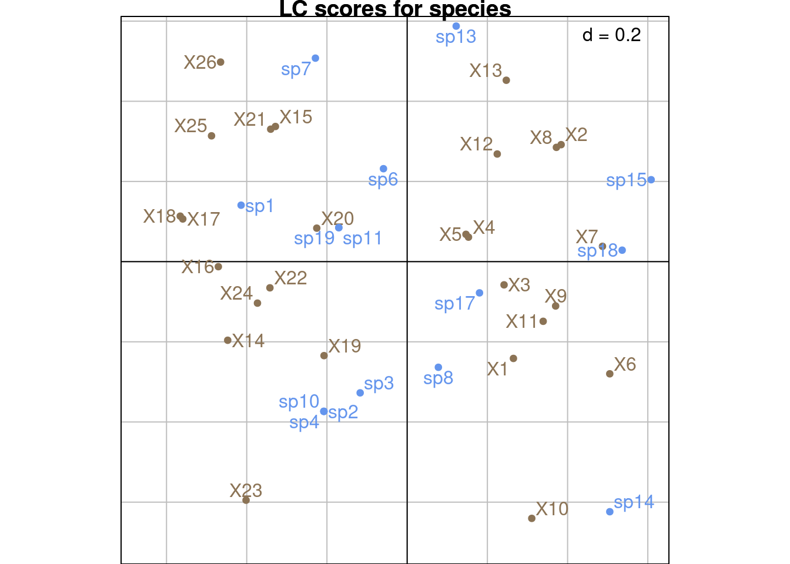
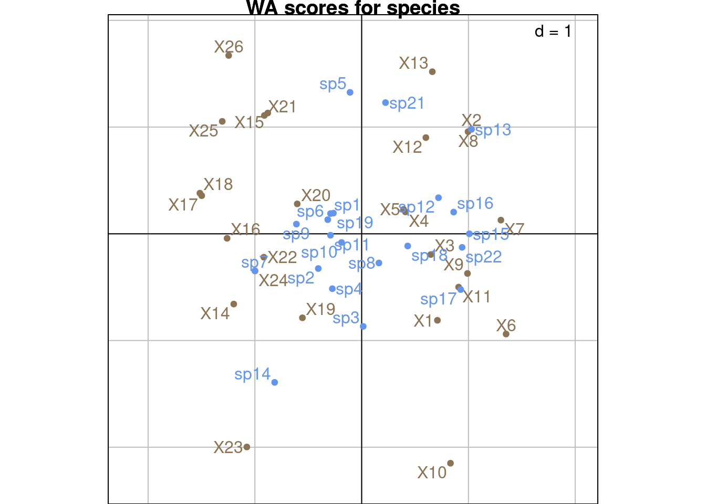
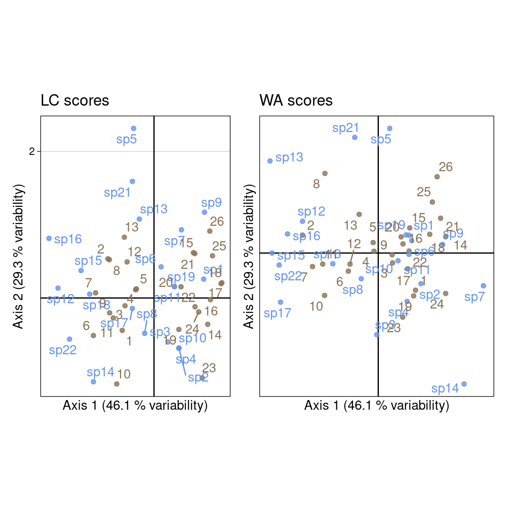
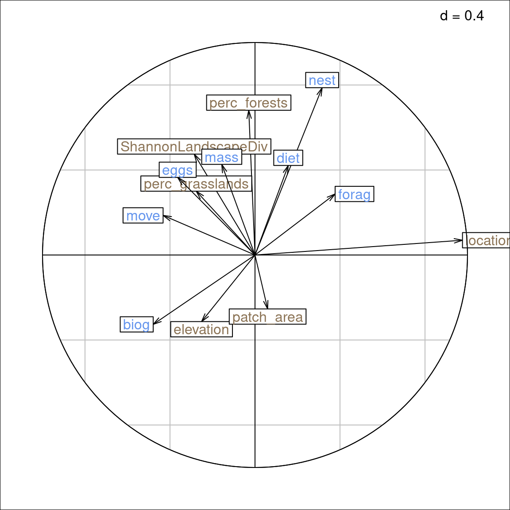

Code
# Paths
library(here)
# Multivariate analysis
library(ade4)
library(adegraphics)
# dc-CA
source(here("functions/dpcaiv2-ade4.R"))
# Matrix algebra
library(expm)
# Plots
library(CAnetwork)
library(patchwork)
library(ggplot2)# Paths
library(here)
# Multivariate analysis
library(ade4)
library(adegraphics)
# dc-CA
source(here("functions/dpcaiv2-ade4.R"))
# Matrix algebra
library(expm)
# Plots
library(CAnetwork)
library(patchwork)
library(ggplot2)# Define bound for comparison to zero
zero <- 10e-10#' Normalize row or columns vectors of a matrix
#'
#' @param M the matrix to normalize
#' @param margin the margin (1 = rows, 2 = columns)
#'
#' @return The normalized matrix M
normalize <- function(M, margin) {
m_norm <- apply(M,
margin,
function(x) sqrt(sum(x^2)))
M_norm <- sweep(M, margin, m_norm, "/")
return(M_norm)
}The contents of this page relies heavily on Braak, Šmilauer, and Dray (2018).
Double constrained correspondence analysis (dc-CA) was developed as a natural extension of CCA and has been used to study the relationship between species traits and environmental variables.
In dc-CA, we have 3 matrices:
dat <- readRDS(here("data/Barbaro2012.rds"))
Y <- dat$comm
E <- dat$envir
T_ <- dat$traits
r <- dim(Y)[1]
c <- dim(Y)[2]
l <- dim(E)[2]
k <- dim(T_)[2]
plotmat(r = r, c = c,
E = TRUE, T_ = TRUE,
l = l, k = k)
The aim of dc-CA is to find a linear combination of the predictor variables in \(E\) and \(T\) (environmental variables and traits) that maximizes the correlation.
Below are the first lines of these matrices for our data:
\(Y =\)
knitr::kable(head(Y))| sp1 | sp2 | sp3 | sp4 | sp5 | sp6 | sp7 | sp8 | sp9 | sp10 | sp11 | sp12 | sp13 | sp14 | sp15 | sp16 | sp17 | sp18 | sp19 | sp21 | sp22 |
|---|---|---|---|---|---|---|---|---|---|---|---|---|---|---|---|---|---|---|---|---|
| 1 | 0 | 1 | 1 | 0 | 1 | 0 | 2 | 0 | 1 | 1 | 0 | 0 | 0 | 0 | 0 | 0 | 0 | 1 | 0 | 0 |
| 2 | 0 | 0 | 2 | 0 | 1 | 0 | 5 | 0 | 2 | 0 | 2 | 4 | 0 | 3 | 3 | 0 | 3 | 1 | 0 | 2 |
| 5 | 0 | 0 | 2 | 0 | 1 | 0 | 2 | 0 | 1 | 2 | 0 | 0 | 0 | 0 | 0 | 0 | 3 | 2 | 0 | 1 |
| 3 | 0 | 0 | 0 | 0 | 1 | 0 | 4 | 1 | 0 | 1 | 0 | 0 | 0 | 0 | 0 | 0 | 2 | 0 | 0 | 1 |
| 5 | 0 | 0 | 1 | 0 | 1 | 0 | 2 | 0 | 0 | 3 | 0 | 0 | 0 | 0 | 1 | 0 | 3 | 1 | 0 | 1 |
| 1 | 0 | 0 | 1 | 0 | 2 | 0 | 3 | 1 | 2 | 1 | 0 | 0 | 0 | 1 | 0 | 1 | 2 | 2 | 0 | 3 |
\(E =\)
knitr::kable(head(E))| location | elevation | patch_area | perc_forests | perc_grasslands | ShannonLandscapeDiv |
|---|---|---|---|---|---|
| 0 | 10 | 6.28 | 7.7882 | 67.7785 | 0.232 |
| 0 | 30 | 7.92 | 16.4129 | 43.4066 | 0.274 |
| 0 | 430 | 83.24 | 24.4526 | 28.4995 | 0.274 |
| 0 | 420 | 140.83 | 41.9966 | 34.2412 | 0.260 |
| 0 | 400 | 140.83 | 41.9966 | 34.2412 | 0.260 |
| 0 | 500 | 0.50 | 7.5445 | 67.0780 | 0.240 |
\(T =\)
knitr::kable(head(T_))| biog | forag | mass | diet | move | nest | eggs | |
|---|---|---|---|---|---|---|---|
| sp1 | 1 | 2 | 2 | 3 | 1 | 2 | 2 |
| sp2 | 1 | 1 | 1 | 2 | 1 | 2 | 2 |
| sp3 | 1 | 1 | 2 | 2 | 2 | 2 | 1 |
| sp4 | 1 | 1 | 1 | 2 | 1 | 2 | 2 |
| sp5 | 1 | 3 | 3 | 1 | 2 | 3 | 4 |
| sp6 | 1 | 1 | 4 | 3 | 2 | 2 | 1 |
(r <- dim(Y)[1])[1] 26(c <- dim(Y)[2])[1] 21(l <- dim(E)[2])[1] 6(k <- dim(T_)[2])[1] 7dc-CA must not have to many traits compared to species: that is a disadvantage compared to RLQ, but on the other hand dc-CA allows to see relationships that RLQ would miss (Braak, Šmilauer, and Dray 2018).
There are several ways to perform dc-CA (Braak, Šmilauer, and Dray 2018), notably:
We define matrix \(D\) as:
\[D = [E_{center}^\top D_r E_{center}]^{-1/2} E_{center}^\top P T_{center} [T_{center}^\top D_c T_{center}]^{-1/2}\]
Note: contrary to Braak, Šmilauer, and Dray (2018), in this document we use the matrice of relative counts \(P\) instead of the matrix of absolte counts \(Y\).
We perform the SVD of \(D\):
\[ D = B_0 \Delta C_0^\top \]
This allows us to find the eigenvectors \(B_0\) (regression coefficients multiplying rows/environment variables) and \(C_0\) (regression coefficients multiplying columns/species traits).
The eigenvalues of the dc-CA are the squared eigenvalues of the SVD: \(\Lambda = \Delta^2\).
There are \(\min(k, l)\) non-null eigenvalues???
Transformation of \(B_0\) and \(C_0\)
Then, we transform \(B_0\) and \(C_0\) (scaling):
Individuals coordinates
The individuals coordinates (species or sites) can be computed in two ways:
Linear combinations (LC scores) are computed from those coefficients :
Weighted averages (WA scores) are computed from the scores of the other individuals:
To check our results, we first perform a dc-CA with ade4:
ca <- dudi.coa(Y,
nf = c-1,
scannf = FALSE)
dcca <- dpcaiv2(dudi = ca,
dfR = E,
dfQ = T_,
scannf = FALSE,
nf = min(k, l))We define \(P\) as the relative counts of \(Y\):
P <- Y/sum(Y)First, we need to center the traits and environment matrices (resp. \(T_{center}\) and \(E_{center}\)). To do so, we use the occurrences in matrix \(P\) as weights:
E_wt <- rowSums(P)/nrow(E)
Ecenter <- scalewt(E, wt = E_wt, scale = FALSE)
T_wt <- colSums(P)/nrow(T_)
Tcenter <- scalewt(T_, wt = T_wt, scale = FALSE)# Check centering
M1 <- matrix(rep(1, nrow(P)), nrow = 1)
all(abs(M1 %*% diag(rowSums(P)) %*% Ecenter) < zero)[1] TRUEM1 <- matrix(rep(1, ncol(P)), nrow = 1)
all(abs(M1 %*% diag(colSums(P)) %*% Tcenter) < zero)[1] TRUEThis is equivalent to centering “inflated” versions of these matrices matching the occurrence counts in \(P\) (below).
\[ E_{center} = E - \bar{E}_{infl} =\left[e_i \sum_i y_{i\cdot}e_i/y_{\cdot\cdot} \right] \]
\[ T_{center} = T - \bar{T}_{infl} = \left[t_j \sum_j y_{\cdot j}t_j/y_{\cdot\cdot} \right] \]
# Center E -----
pi_ <- rowSums(P)
Ecenter2 <- matrix(nrow = nrow(E), ncol = ncol(E))
for(i in 1:ncol(Ecenter)) {
Ecenter2[, i] <- E[, i] - sum(E[, i]*pi_)/sum(P)
}
# This is the same as computing a mean on inflated data matrix Einfl and centering E with these means
# Center T -----
p_j <- colSums(P)
Tcenter2 <- matrix(nrow = nrow(T_), ncol = ncol(T_))
rownames(Tcenter2) <- rownames(T_)
colnames(Tcenter2) <- colnames(T_)
for(j in 1:ncol(Tcenter)) {
Tcenter2[, j] <- T_[, j] - (sum(T_[, j]*p_j)/sum(P))
}# Check equivalence between the 2 methods
all(abs(Ecenter/Ecenter2 - 1) < zero)[1] TRUEall(abs(Tcenter/Tcenter2 - 1) < zero)[1] TRUEThen, we search scores \(u\) and \(v\) that maximize the fourth-corner correlation \(u^\top P v\) (where \(u\) are the sites (rows) scores and \(v\) are the species (columns) scores).
In this framework, we define \(u\) and \(v\) as linear combinations of traits and environmental variables: \(u = E_{center}b\) and \(v = T_{center}c\).
So in the end, we need to maximize \(u^\top P v\) with respect to the coefficients vectors \(b\) and \(c\):
\[ \max_{b, c}(u^\top P v) = \max_{b, c}\left(\left[E_{center}b\right]^\top P T_{center}c \right) \]
These equations are written for the first axis, but we can also write them in matrix form:
\[ \max_{B, C}(U^\top P V) = \max_{B, C}\left(\left[E_{center}B\right]^\top P T_{center}C \right) \]
We define the diagonal matrices \(D_r\) and \(D_c\), which contain the column and row sums (respectively). We introduce the following constraint on \(U\) and \(V\): \(u^\top D_r u = 1\) and \(v^\top D_c v = 1\). It means that the matrices \(U\) and \(V\) are orthonormal with respect to the weights \(D_r\) and \(D_c\). (In fact, these constraints will be relaxed later depending on the scaling (see below)).
To find the coefficients \(B\) and \(C\) defined above, we can perform a SVD or two diagonalizations (see below).
To find the coefficients \(B\) and \(C\), we perform the SVD of a matrix \(D\) defined as:
\[ D = \underbrace{[E_{center}^\top D_r E_{center}]^{-1/2}}_{L^{-1/2}} \underbrace{E_{center}^\top P T_{center}}_{R} \underbrace{[T_{center}^\top D_c T_{center}]^{-1/2}}_{K^{-1/2}} \]
# Define weights
dr <- rowSums(P)
dc <- colSums(P)
Dr <- diag(dr)
Dc <- diag(dc)# Define intermediate matrices
L <- t(Ecenter) %*% Dr %*% Ecenter
R <- t(Ecenter) %*% P %*% Tcenter
K <- t(Tcenter) %*% Dc %*% TcenterWith our dataset:
D <- solve(sqrtm(t(Ecenter) %*% Dr %*% Ecenter)) %*%
t(Ecenter) %*% P %*% Tcenter %*%
solve(sqrtm(t(Tcenter) %*% Dc %*% Tcenter))We perform the SVD of \(D\):
\[D = B_0 \Delta C_0^\top\]
sv <- svd(D)
# Singular values
delta <- sv$d
Delta <- diag(delta)
# Eigenvalues
lambda <- delta^2
Lambda <- diag(lambda)
# Eigenvectors
B0 <- sv$u
dim(B0) # l x l[1] 6 6C0 <- sv$v
dim(C0) # k x l[1] 7 6Equivalently, we can also diagonalize the matrices \(M\) and \(M_2\) defined below.
\(M\) is defined as:
\[ M = [\underbrace{E_{center}^\top D_r E_{center}}_{L} ]^{-1} \underbrace{E_{center}^\top P T_{center}}_{R} [ \underbrace{T_{center}^\top D_c T_{center}}_{K} ]^{-1} \underbrace{T_{center}^\top P^\top E_{center}}_{R^\top} \tag{1}\]
We can also view \(M\) as:
\[ M = \underbrace{\left[E_{center}^\top D_r E_{center} \right]^{-1} E_{center}^\top P T_{center}}_{\hat{E}_{center} = \beta T_{center}} \underbrace{\left[T_{center}^\top D_c T_{center} \right]^{-1} T_{center}^\top P^\top E_{center}}_{\hat{T}_{center} = \gamma E_{center}} \]
where \(\hat{E}_{center}\) is the predicted values of sites variables from species traits. Reciprocally, \(\hat{T}_{center}\) is the predicted values of species traits from sites variables. \(\beta\) and \(\gamma\) are the vectors of the regression coefficients. From Equation 1, we have \(\beta = \left[E_{center}^\top D_r E_{center} \right]^{-1} E_{center}^\top P\) and \(\gamma = \left[T_{center}^\top D_c T_{center} \right]^{-1} T_{center}^\top P^\top\).
M <- solve(t(Ecenter) %*% Dr %*% Ecenter) %*% t(Ecenter) %*% P %*% Tcenter %*% solve(t(Tcenter) %*% Dc %*% Tcenter) %*% t(Tcenter) %*% t(P) %*% Ecenter\(M_2\) is defined as:
\[ M_2 = \underbrace{\left[T_{center}^\top D_c T_{center} \right]^{-1} T_{center}^\top P^\top E_{center}}_{\hat{T}_{center} = \gamma E_{center}} \underbrace{\left[E_{center}^\top D_r E_{center} \right]^{-1} E_{center}^\top P T_{center}}_{\hat{E}_{center} = \beta T_{center}} \]
M2 <- solve(t(Tcenter) %*% Dc %*% Tcenter) %*% t(Tcenter) %*% t(P) %*% Ecenter %*% solve(t(Ecenter) %*% Dr %*% Ecenter) %*% t(Ecenter) %*% P %*% Tcenter The eigenvectors matrices of these diagonalizations give us \(B\) and \(C\):
\[ M = B \Lambda_b B^{-1} \]
# Diagonalize M
eigB <- eigen(M)
lambdaB <- eigB$values
lambdaB # All l = 6 non-null eigenvectors[1] 0.139487442 0.088736680 0.049183623 0.013797529 0.008736645 0.002485683B_diag <- eigB$vectors
# Check that the result checks out with SVD
all(abs(abs(B_diag/B0) - 1) < zero) # it isn't equal[1] FALSEapply(B_diag, 2, function(x) sqrt(sum(x^2))) # but B_diag is of norm 1 (like B0)[1] 1 1 1 1 1 1\[ M_2 = C \Lambda_c C^{-1} \]
# Diagonalize M2
eigC <- eigen(M2)
lambdaC <- eigC$values
lambdaC # l = 6 non-null eigenvalues[1] 1.394874e-01 8.873668e-02 4.918362e-02 1.379753e-02 8.736645e-03
[6] 2.485683e-03 -1.025803e-18C_diag <- eigC$vectors
# Check that the result checks out with SVD
all(abs(abs(C_diag[, 1:l]/C0) - 1) < zero) # it isn't equal[1] FALSEapply(C_diag[, 1:l], 2, function(x) sqrt(sum(x^2))) # but C_diag is of norm 1 (like C0)[1] 1 1 1 1 1 1# The two diagonalizations have the same non-null eigenvectors
all(lambdaB - lambdaC[1:l] < zero)[1] TRUEThe eigenvalues of the SVD \(\Lambda = \Delta^2\) are the same as \(\Lambda_b\) and \(\Lambda_c\).
all(abs(lambda - lambdaB) < zero)[1] TRUEWe also define the following “scalings” for the coefficients:
\[ \left\{ \begin{array}{ll} B &= L^{-1/2} B_0\\ C &= K^{-1/2} C_0 \end{array} \right. \]
(We recall that \(L = E_{center}^\top D_r E_{center}\) and \(K = T_{center}^\top D_c T_{center}\)).
B <- solve(sqrtm(L)) %*% B0
C <- solve(sqrtm(K)) %*% C0# B0 and C0 are of norm 1
apply(B0, 2, function(x) sqrt(sum(x^2))) [1] 1 1 1 1 1 1apply(C0, 2, function(x) sqrt(sum(x^2))) [1] 1 1 1 1 1 1# B and C are normed with L and K
apply(B, 2, function(x) sqrt(sum(x^2)))[1] 31.27063 57.99206 81.06909 67.68646 86.23340 88.33241apply(C, 2, function(x) sqrt(sum(x^2)))[1] 1.905060 2.714419 3.397999 4.832457 1.714880 2.707478# t(B) L B is the identity matrix
id_l <- diag(1, nrow = l, ncol = l)
all(abs((t(B) %*% L %*% B) - id_l) < zero)[1] TRUE# t(C) K C is the identity matrix
id_c <- diag(c(rep(1, k-1), 0),
nrow = k, ncol = k) # Identity minus last vector (zero)
C_k <- cbind(C, rep(0, k)) # Add null eigenvector
all(abs(t(C_k) %*% K %*% C_k - id_c) < zero)[1] TRUEUsing the coefficients \(B\) and \(C\), we can now define scores for sites and species scores as a linear combination of their variables:
U <- Ecenter %*% B
# Check it is the same as ade4 scores
all(abs(U/dcca$l1) - 1 < zero)[1] TRUEV <- Tcenter %*% C
# Check it is the same as ade4 scores
all(abs(V/dcca$c1) - 1 < zero)[1] TRUEWe can also define species scores as the mean of sites LC scores (and the reverse):
Ustar <- diag(dr^(-1)) %*% P %*% V
# Check it is the same as ade4 scores
all(abs(Ustar/dcca$lsR) - 1 < zero)[1] TRUEVstar <- diag(dc^(-1)) %*% t(P) %*% U
# Check it is the same as ade4 scores
all(abs(Vstar/dcca$lsQ) - 1 < zero)[1] TRUEThere are two types of coordinates: linear combination scores (LC scores) and weighted averages scores (WA scores) for the sites and species individuals.
The general formulas are:
In these formulas, note that the WA scores for one dimension are computed from the predicted scores of the other dimension.
Scaling type 1 (\(\alpha = 1\))
Scaling type 2 (\(\alpha = 0\))
Scaling type 3 (\(\alpha = 1/2\))
\(\alpha\) changes the interpretation of the correlations vectors:
When plotting the correlation circle, to look at the correlations between variables of the same set (traits or environmental variables), we should use \(BS_{B2}\) and \(BS_{C1}\). There are the scores returned by ade4.
This type of scaling preserves the distances between rows (\(\alpha = 1\)).
With the scaling type 1, \(BS_{B1}\) represents the correlation between environmental variables and species and \(BS_{C1}\) represents the correlation between species traits and species.
# LC scores
U1 <- Ecenter %*% B %*% Delta # rows
V1 <- Tcenter %*% C # columns
# WA scores
Ustar1 <- solve(Dr) %*% P %*% V1 # rows
Vstar1 <- solve(Dc) %*% t(P) %*% U1 # columns
# Variables scores
BS_B1 <- B %*% Delta
BS_C1 <- C
# Normalize
BS_B1norm <- normalize(BS_B1, 1)
BS_C1norm <- normalize(BS_C1, 1)# Compare results to ade4
all(abs(U1/dcca$li) - 1 < zero) # sites LC[1] TRUEall(abs(V1/dcca$c1) - 1 < zero) # spp LC[1] TRUEall(abs(Ustar1/dcca$lsR) - 1 < zero) # sites WA[1] TRUEall(abs(abs(Vstar1/dcca$lsQ) - 1) < zero) # not stored in ade4[1] FALSEall(abs(BS_B1norm/dcca$corR) - 1 < zero) # not true[1] FALSEall(abs(BS_C1norm/dcca$corQ) - 1 < zero) # not true, but should be[1] FALSE# LC scores
glc <- multiplot(indiv_row = U1, # LC for sites
indiv_col = V1, # LC1 for spp
indiv_row_lab = rownames(Y), indiv_col_lab = colnames(Y),
# var_row = BS_B1norm, var_row_lab = colnames(E),
# var_col = BS_C1norm, var_col_lab = colnames(T_),
row_color = params$colsite, col_color = params$colspp,
eig = lambda) +
ggtitle("LC scores for sites")
# WA scores
gwa <- multiplot(indiv_row = Ustar1, # WA for sites
indiv_col = V1, # LC1 for spp
indiv_row_lab = rownames(Y), indiv_col_lab = colnames(Y),
# var_row = BS_B1norm, var_row_lab = colnames(E),
# var_col = BS_C1norm, var_col_lab = colnames(T_),
row_color = params$colsite, col_color = params$colspp,
eig = lambda) +
ggtitle("WA scores for sites")
glc + gwa +
plot_layout(axis_titles = "collect")
s.corcircle(BS_B1norm,
labels = colnames(E),
plabels.col = params$colsite)
s.corcircle(BS_C1norm,
labels = colnames(T_),
plabels.col = params$colspp, add = TRUE)
On this plot, we can interpret 5 sets of pairs:
mass and perc_forests is large (arrows size + direction).location variable.The last pair is the individuals on each plot:
Moreover, species traits (\(BS_C^1\)): arrows indicate intra-set correlations.
There is no interpretation for sites - environmental variables (\(U_1\) - \(BS_{B1}\)).
Same plots with ade4:
s.label(dcca$c1, # Species LC1
plabels.optim = TRUE,
plabels.col = params$colspp,
ppoints.col = params$colspp,
main = "LC scores for sites")
s.label(dcca$li, # Sites LC
plabels.optim = TRUE,
plabels.col = params$colsite,
ppoints.col = params$colsite,
add = TRUE)
s.label(dcca$c1, # Species LC1
plabels.optim = TRUE,
plabels.col = params$colspp,
ppoints.col = params$colspp,
main = "WA scores for sites")
s.label(dcca$lsR, # Sites WA scores
plabels.optim = TRUE,
plabels.col = params$colsite,
ppoints.col = params$colsite,
add = TRUE)
s.corcircle(dcca$corQ,
plabels.col = params$colspp)
s.corcircle(dcca$corR,
plabels.col = params$colsite, add = TRUE)
This type of scaling preserves the distances between columns.
With the scaling type 2, \(BS_{B2}\) represents the correlation between environmental variables and sites and \(BS_{C2}\) represents the correlation between species traits and sites.
# LC scores
U2 <- Ecenter %*% B # rows
V2 <- Tcenter %*% C %*% Delta # columns
# WA scores
Ustar2 <- solve(Dr) %*% P %*% V2 # rows
Vstar2 <- solve(Dc) %*% t(P) %*% U2 # columns
# Variables scores
BS_B2 <- B
BS_C2 <- C %*% Delta
# Normalize
BS_B2norm <- normalize(BS_B2, 1)
BS_C2norm <- normalize(BS_C2, 1)all(abs(U2/dcca$l1) - 1 < zero) # LC sites[1] TRUEall(abs(V2/dcca$co) - 1 < zero) # LC spp[1] TRUEall(abs(Vstar2/dcca$lsQ) - 1 < zero) # WA spp[1] TRUEall(abs(Ustar2/dcca$lsR) - 1 < zero) # not stored in ade4[1] TRUEall(abs(BS_B2norm/dcca$corR) - 1 < zero) # Not equal, but should be[1] FALSEall(abs(BS_C2norm/dcca$corQ) - 1 < zero) # Not equal[1] FALSE# LC scores
glc <- multiplot(indiv_row = U2, indiv_col = V2,
indiv_row_lab = rownames(Y), indiv_col_lab = colnames(Y),
# var_row = BS_B2norm, var_row_lab = colnames(E),
# var_col = BS_C2norm, var_col_lab = colnames(T_),
row_color = params$colsite, col_color = params$colspp,
eig = lambda) +
ggtitle("LC scores for species")
# WA scores
gwa <- multiplot(indiv_row = U2, indiv_col = Vstar2,
indiv_row_lab = rownames(Y), indiv_col_lab = colnames(Y),
# var_row = BS_B2norm, var_row_lab = colnames(E),
# var_col = BS_C2norm, var_col_lab = colnames(T_),
row_color = params$colsite, col_color = params$colspp,
eig = lambda) +
ggtitle("WA scores for species")
glc + gwa +
plot_layout(axis_titles = "collect")
s.corcircle(BS_B2norm,
labels = colnames(E),
plabels.col = params$colsite)
s.corcircle(BS_C2norm,
labels = colnames(T_),
plabels.col = params$colspp, add = TRUE)
There is no interpretation for species - species traits (\(V_2\) - \(BS_{C2}\)).
With ade4:
s.label(dcca$li, # LC1 sites
plabels.optim = TRUE,
plabels.col = params$colsite,
ppoints.col = params$colsite,
main = "LC scores for species")
s.label(dcca$co, # LC species
plabels.optim = TRUE,
plabels.col = params$colspp,
ppoints.col = params$colspp,
add = TRUE)
s.label(dcca$l1, # LC1 sites
plabels.optim = TRUE,
plabels.col = params$colsite,
ppoints.col = params$colsite,
main = "WA scores for species")
s.label(dcca$lsQ, # WA species
plabels.optim = TRUE,
plabels.col = params$colspp,
ppoints.col = params$colspp,
add = TRUE)
This type of scaling is an intermediate between scalings 1 and 2.
With the scaling type 3, \(BS_{B3}\) and \(BS_{C3}\) represent the geometric mean of their correlation with species and sites.
# LC scores
U3 <- Ecenter %*% B %*% Delta^(1/2) # rows
V3 <- Tcenter %*% C %*% Delta^(1/2) # columns
# WA scores
Ustar3 <- solve(Dr) %*% P %*% V3 # rows
Vstar3 <- solve(Dc) %*% t(P) %*% U3 # columns
# Variables scores
BS_B3 <- B %*% Delta^(1/2)
BS_C3 <- C %*% Delta^(1/2)
# Normalize
BS_B3norm <- normalize(BS_B3, 1)
BS_C3norm <- normalize(BS_C3, 1)# LC scores
glc <- multiplot(indiv_row = U3, indiv_col = V3,
indiv_row_lab = rownames(Y), indiv_col_lab = colnames(Y),
# var_row = BS_B3norm, var_row_lab = colnames(E),
# var_col = BS_C3norm, var_col_lab = colnames(T_),
row_color = params$colsite, col_color = params$colspp,
eig = lambda) +
ggtitle("LC scores")
# WA scores
gwa <- multiplot(indiv_row = Ustar3, indiv_col = Vstar3,
indiv_row_lab = rownames(Y), indiv_col_lab = colnames(Y),
# var_row = BS_B3norm, var_row_lab = colnames(E),
# var_col = BS_C3norm, var_col_lab = colnames(T_),
row_color = params$colsite, col_color = params$colspp,
eig = lambda) +
ggtitle("WA scores")
glc + gwa +
plot_layout(axis_titles = "collect")
s.corcircle(BS_B3norm,
labels = colnames(E),
plabels.col = params$colsite)
s.corcircle(BS_C3norm,
labels = colnames(T_),
plabels.col = params$colspp, add = TRUE)
This method finds the linear correlation of row explanatory variables (environmental variables) and the linear correlation of columns explanatory variables (species traits) that maximizes the fourth-corner correlation, i.e. the correlation between these linear combinations of row and columns-variables.
There are other related methods, that have been better described and also more used in ecology: RLQ, community weighted means RDA (CMW-RDA).
Contrary to RLQ, dc-CA takes into account the correlation between the row and column variables. Thus, while RLQ can analyze any number of row and column variables, it is not the case with dc-CA the number of row and column variables must not be large compared to the number of rows/columns in the tables. Also, dc-CA maximizes correlation and RLQ maximizes covariance (Braak, Šmilauer, and Dray 2018).
The eigenvalues of dc-CA are the squares of the fourth-corner correlations.